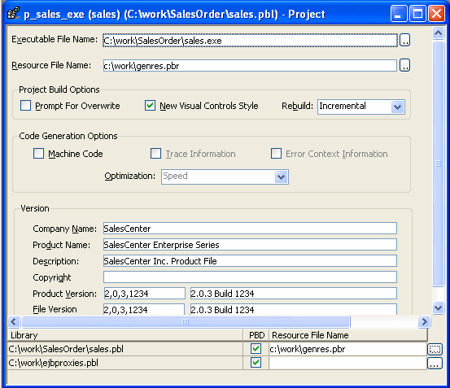

The Project painter for executable applications allows you to streamline the generation of executable files and dynamic libraries. When you build a project object, you specify the following components of your application:
If you do not use the Template Application Target wizard to create a new application project, you need to define the project using a Project wizard or by setting project properties in the Project painter. After you have created a project, you might need to update it later because your library list has changed or you want to change your compilation options.
 To define or modify an executable application
project:
To define or modify an executable application
project:
Select the Application project icon on the Project tab in the New dialog box to create a new application project, or select File>Open to open an existing application project.
The Project painter workspace displays.

Specify or modify options as needed.
If you opened an existing project or a project created using the wizard, the options already selected display in the workspace. For information about each option, see "Executable application project options".
When you have finished defining the project object, save the object by selecting File>Save from the menu bar.
PowerBuilder saves the project as an independent object in the specified library. Like other objects, projects are displayed in the System Tree and the Library painter.
Table 34-2 describes each of the options you can specify in the Project painter for executable applications. You can also specify most of these options in the Application Project wizard.
| Option | What you specify |
|---|---|
| Executable File Name | Specify a name for the executable. The name must have the extension EXE. If you do not want the executable saved to your current directory, click the Browse (...) button next to the box to navigate to a different directory. |
| Resource File Name | (Optional) Specify a PowerBuilder resource
file (PBR) for your executable if you dynamically reference resources
(such as bitmaps and icons) in your scripts and you
want the resources included in the executable file instead of having
to distribute the resources separately. You can type the name of a resource file in the box or click the button next to the box to browse your directories for the resource file you want to include. For more about PBRs, see "Distributing resources ". |
| Prompt for Overwrite | Select this if you want PowerBuilder to prompt you before overwriting files. PowerBuilder overwrites any files it creates when building your application. |
| New Visual Style Controls | Select this to add a manifest file to the application that specifies the appearance of the controls as an application resource. When a user runs the application on Windows XP with the Windows XP style for controls set in the control panel, all PowerBuilder windows, DataWindow controls that mirror standard Windows controls, and other controls, display with the new style. |
| Rebuild | Specify either Full or Incremental to
indicate whether you want PowerBuilder to regenerate all objects
in the application libraries before it creates the executable and
dynamic libraries. If you choose Incremental, PowerBuilder regenerates
only objects that have changed, and objects that reference any objects
that have changed, since the last time you built your application. As a precaution, regenerate all objects before rebuilding your project. |
| Machine Code | Select this if you want to generate compiled
code instead of Pcode. For more information about compiled code
and Pcode, see Application Techniques.
Selecting Machine Code enables the other code generation options in the Project painter. They cannot be set in the wizard. |
| Trace Information | Select this if you want to create a trace file when you run your compiled code executable. You can use the trace file to troubleshoot or profile your application. For more information on obtaining trace information, see "Tracing execution". |
| Error Context Information | Select this if you want PowerBuilder to display context information (such as object, event, and script line number) for runtime errors. |
| Optimization | Select an optimization level. You can build your application with no optimizations, or you can optimize for speed or space. |
| Version | Specify your own values for the Company
Name, Product Name, Description, Copyright, Product Version, and
File Version fields associated with the executable file and with
machine-code DLLs. These values become part of the Version resource
associated with the executable file, and most of them display on
the Version tab page of the Properties dialog box for the file in
Windows Explorer. The File and Product Version numeric fields, on the left in the painter, are used by Microsoft Installer to determine whether a file needs to be updated when a product is installed. They must have the format: N,N,N,N The four numbers can be used to represent the major version, minor version, point release, and build number of your product. They must all be present. If your file versioning system does not use all these components, you can replace the unused numbers with zeroes. For example, 3,1,333 causes an error message to display when you attempt to save or build the project, but 3,1,333,0 does not. The maximum value for any of the numbers in the string is 65535. The File and Product Version string fields, on the right in the painter, can have any format. These fields display in the executable file's Properties dialog box. |
| PBD or DLL | The label for this check box depends
on whether you are building a Pcode or machine code executable.
Select the check box to define a library as a dynamic library to
be distributed with your application. If you are generating Pcode, you create PBD files. If you are generating machine code, you create DLL files. For more about dynamic libraries, see "Using dynamic libraries ". |
| Resource File Name | Specify a resource file for a dynamic library if it uses resources (such as bitmaps and icons) and you want the resources included in the dynamic library instead of having to distribute the resources separately. The file name cannot be specified in the wizard. |
The machine code generation process puts temporary files in a temporary directory, such as the TEMP directory. You can specify a different location in the [PB] section of your PowerBuilder initialization file with the CODEGENTEMP variable. You might want to do this if you have limited space on your local system.
For example:
CODEGENTEMP=e:\pbtempdir